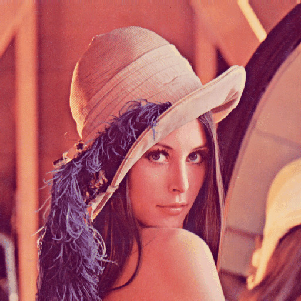

Tema 1- Introducción a OpenCV¶
En este tema veremos las funcionalidades básicas de OpenCV: cargar una imagen o un vídeo, mostrarlo por pantalla y guardar ficheros.
Carga y visualización de imágenes¶
Vamos a comprobar que la instalación se ha hecho de forma correcta ejecutando el siguiente programa de ejemplo.
import cv2 as cv
import argparse
# Gestión de parámetros
parser = argparse.ArgumentParser(description = 'Programa para cargar y mostrar una imagen')
parser.add_argument('--imagen', '-i', type=str, default='lena.jpg')
args = parser.parse_args()
# Cargamos la imagen indicada por el usuario (por defecto, en color)
img = cv.imread(args.imagen)
# Comprobamos que la imagen se ha podido leer
if img is None:
print("Error al cargar la imagen", args.imagen)
quit()
# Mostramos la imagen en una ventana con el título "Imagen"
cv.namedWindow('Ventana', cv.WINDOW_AUTOSIZE)
cv.imshow('Ventana', img)
# Esperar a pulsar una tecla en la ventana para cerrarla
cv.waitKey(0)
Primero guardamos este fichero con el nombre lectura.py. Para probar el código, descargamos esta imagen de ejemplo:

Y a continuación ejecutamos el programa de la siguiente forma:
python3 lectura.py
En el caso de Windows, en lugar de poner
python3hay que escribir sólopython.
Como puede verse, se crea una ventana con la imagen, por defecto lena.jpg. Esta ventana se cerrará cuando pulsemos una tecla.
Podemos ejecutar el programa con otra imagen indicando la opción --imagen o alternativamente la versión corta, -i:
python3 lectura.py --imagen otraimagen.jpg
# Equivalente a: python3 lectura.py -i otraimagen.jpg
Vamos a analizar este código en detalle. En la primera línea, el programa incluye OpenCV. Esto debemos hacerlo siempre que queramos usar la librería. También es conveniente incluir la librería numpy, ya que es la que usa OpenCV para gestionar los arrays y por tanto nos permite acceder directamente a los valores de intensidad de las imágenes. A veces es posible que necesitemos incluir algún fichero de cabecera adicional, como en este caso la librería argparse que sirve para gestionar los argumentos del programa.
La librería argparse se encarga de comprobar que el usuario ha introducido los parámetros especificados. Si falta algún parámetro se usan unos valores por defecto. Cuando un parámetro es opcional suele indicar que comience por --, aunque por defecto todos los parámetros son opcionales a no ser que se añada la opción required=True. A los parámetros sin valor por defecto se les asigna None, y esto es lo que recibe el programa si el usuario no establece su valor.
A continuación leemos una imagen con imread usando el nombre de fichero que se le pasa por parámetro y la guardamos en una matriz llamada img. Cada vez que intentemos cargar una imagen es importante comprobar que se ha podido leer correctamente.
En este punto ya tenemos la imagen cargada en una matriz. Podríamos procesarla, pero de momento sólo vamos a mostrarla en una ventana. Para ello creamos una ventana con el nombre Ventana de tamaño variable, y llamamos al método imshow para mostrar la imagen en la ventana.
En este ejemplo la llamada a
namedWindowpuede omitirse sin consecuencias. Siimshowrecibe como primer parámetro el nombre de una ventana que todavía no está creada, ésta se crea automáticamente con los parámetros por defecto.
Siempre que mostremos una imagen en pantalla debemos llamar a la función waitKey(0) para que la ventana se cierre cuando se pulse una tecla. Si no añadimos esta línea, la ventana no llegará a aparecer (mejor dicho, aparecerá y se cerrará de inmediato).
Carga de imágenes¶
La siguiente instrucción carga en una matriz la imagen cuyo nombre recibe por parámetro.
image = cv.imread('lena.jpg')
Como sabes, las imágenes digitales se representan con matrices.

Los formatos principales de imágenes soportadas por OpenCV son:
- Windows bitmaps (
bmp,dib) - Portable image formats (
pbm,pgm,ppm) - Sun rasters (
sr,ras)
También soporta otros formatos a través de librerías auxiliares:
- JPEG (
jpeg,jpg,jpe) - JPEG 2000 (
jp2) - Portable Network Graphics (
png) - TIFF (
tiff,tif) - WebP (
webp).
La función imread tiene un parámetro opcional. Cuando carguemos una imagen en escala de grises debemos usar IMREAD_GRAYSCALE:
# Cargamos la imagen (tanto si está en color como si no) en escala de grises
img = cv.imread('lena.jpg', cv.IMREAD_GRAYSCALE)
Esto es porque la opción por defecto es IMREAD_COLOR, y por tanto se cargará la imagen con 3 canales independientemente de que esté o no en escala de grises. Estos son los tres tipos de opciones que podemos usar con imread:
cv.IMREAD_GRAYSCALE: Cargamos la imagen en escala de grises.cv.IMREAD_COLOR: Cargamos la imagen en color. Si tenía canal alpha (transparente), se ignora.cv.IMREAD_UNCHANGED: Cargamos la imagen tal como es incluyendo el canal alpha si lo tuviera.
En general, cuando necesites ayuda sobre la sintaxis de cualquier función de OpenCV, puedes escribir desde el mismo código en python:
help(cv.imshow), reemplazandoimshowpor el nombre de la función de la que deseas obtener ayuda.
Imágenes en OpenCV¶
En python, OpenCV usa arrays numpy para almacenar las imágenes. Para usar esta librería en nuestro código, tenemos que importarla al principio:
import numpy as np
Una vez importada podemos crear una matriz de cualquier tamaño, contenga o no los datos de una imagen:
img = np.full((100,100,3), (0,0,255), dtype=np.uint8)
print(img)
En este ejemplo hemos creado una matriz de 100x100x3 (podría corresponder con una imagen de 100 filas por 100 columnas con 3 canales), inicializada con el valor rojo (0,0,255), y de tipo uint8 (8 bits). Este tipo de dato es el estándar para crear imágenes con una profundidad de 8 bits en python (en el caso de C++ es uchar en lugar de uint8). Con 8 bits se pueden representar valores que van desde 0 a 255.
Si visualizas esta imagen con
imshowverás que es roja. Esto es porque el valor rojo se representa en el último canal debido a que OpenCV carga las imágenes en modo BGR en lugar del estándar RGB. Es decir, el canal 0 es el azul, el canal 1 el verde, y el canal 2 el rojo.
Además del tipo uint8, que es el más común para imágenes, un array de numpy puede ser de cualquiera de estos tipos.
Existen varias alternativas para asignar valores a una matriz que ya está creada, por ejemplo:
img.fill(255) # solo si la imagen es de 1 canal
img[::]=(255,0,0) # Para cambiar todos los valores por (255,0,0)
Para más información sobre la sintaxis de acceso a arrays de numpy puedes consultar esta ayuda.
En caso de que quisiéramos inicializar todos los valores de la matriz a 0, a 1 o a cualquier otro valor también podríamos indicarlo:
img = np.zeros((100,100,3), dtype=np.uint8) # Inicialización con ceros
img = np.ones((100,100,3), dtype=np.uint8) # Inicialización con unos
img = np.array([[[255, 0, 0], [255, 0, 0]],
[[255, 0, 0], [255, 0, 0]],
[[255 ,0 ,0], [255, 0, 0]]], dtype=np.uint8) # Inicialización de una matriz de tamaño 3x2x3 con todos los píxeles de color azul
En python, para copiar una variable en otra debemos llevar cuidado con usar el símbolo igual. Por ejemplo:
x = img
y = np.copy(img)
Si después de ejecutar este código modificamos img cambiará también el valor de x pero no el de y. Esto es porque el operador asignación (=) no hace una copia de la matriz, sino que crea un puntero que apunta a la variable. Para hacer una copia es necesario el método copy.
Para acceder a valores individuales de una matriz podemos hacer uso de las siguientes opciones:
matrix = np.array([[1,2,3],[4,5,6]]) # Crea una matriz de 2x3
print(matrix[0, 0], matrix[0, 1], matrix[1, 0]) # Imprime "1 2 4"
matrix[0, 0] = 2 # Cambia a 2 el valor de la posición 0,0
Si queremos obtener información sobre la estructura de la matriz podemos usar la siguiente instrucción:
print(matrix.dtype) # Imprime el tipo de la matriz
print(matrix.shape) # Imprime las dimensiones "(2, 3)"
print(matrix.ndim) # Imprime el número total de dimensiones (2)
print(matrix.size) # Imprime el número de elementos que tenemos en el array (6)
Podemos hacer multitud de operaciones con arrays numpy, tales como invertir matrices, transponerlas, etc.
En numpy se puede seleccionar parte de un array de forma sencilla, como se puede ver en el siguiente ejemplo extraido de la ayuda de numpy:
data = np.array([1, 2, 3])
print(data[1]) # 2
print(data[0:2]) # (1,2)
print(data[1:]) # (2,3)
print(data[-2:]) # (2, 3)

Para acceder de forma iterativa a todos los elementos de un array se puede usar el siguiente bucle:
for x in data:
print(x)
En el caso de una imagen para la que queramos iterar elemento a elemento:
for x in img:
for y in x:
print(y)
Si queremos acceder a una una imagen usando índices en lugar de iteradores se puede utilizar range:
rows,cols = img.shape
for i in range(rows):
for j in range(cols):
print(img[i,j])
También es posible crear una matriz que almacene una región de interés (una zona rectangular) de otra imagen:
r = img[y1:y2, x1:x2]
Donde (x1,y1) son las coordenadas de la esquina superior izquierda del rectángulo que queremos recortar, y (x2,y2) son las coordenadas de la esquina inferior derecha.
Puedes probar este programa de ejemplo para ver cómo se extrae una subimagen, esta vez usando la función selectROI que nos permite seleccionar una región de interés mediante el interfaz de OpenCV:
import cv2 as cv
img = cv.imread('lena.jpg')
r = cv.selectROI(img)
imgCrop = img[r[1]:r[1]+r[3], r[0]:r[0]+r[2]]
cv.imshow('Crop', imgCrop)
cv.waitKey(0)
A veces es necesario cambiar el tipo de dato de un array o matriz. Podemos hacer este cambio de forma sencilla usando los tipos numpy:
dst = np.float32(src) # Conversión a float
dst = np.intc(src) # Conversión a int
dst = np.uint8(src) # Conversión a uint8
Hay veces en las que la conversión de tipos no puede hacerse directamente, por ejemplo cuando convertimos una matriz float32 en uint8, ya que podemos salirnos de rango (en el primer caso representamos la variable con 32 bits, en el segundo con 8). Para evitar esto se suele aplicar normalización. Por ejemplo, si tenemos una matriz m de tipo float32 podemos hacer la conversión de la siguiente forma:
# Normalizamos los valores entre 0 y 255
m = m - m.min()
m = m/m.max() * 255
# Ahora ya se puede convertir a uint8
dst = np.uint8(m)
Guardar imágenes¶
Para guardar una imagen en disco se usa la función imwrite de OpenCV. Ejemplo:
cv.imwrite('output.jpg', img)
Esta función determina el formato del fichero de salida a partir de la extensión proporcionada en su nombre (en este caso, JPG). Existe un tercer parámetro opcional en el que podemos indicar un array con opciones de escritura. Por ejemplo:
cv.imwrite('compress.png', img, [cv.IMWRITE_PNG_COMPRESSION, 9]) # Compresión PNG de nivel 9
Como hemos visto podemos guardar imágenes con imwrite, pero hay casos en los que esta operación puede fallar (por ejemplo, cuando intentamos acceder a un directorio sin permisos). Si esto ocurre, el método devolverá false. Si queremos saber si se ha guardado correctamente la imagen, tenemos que comprobarlo (es recomendable hacerlo siempre):
writeStatus = cv.imwrite('img.jpg', img)
if writeStatus is True:
print('Imagen guardada')
else:
print('Error al guardar la imagen') # Excepción u otro problema de escritura
Ejercicio¶
Haz un programa llamado grayscale.py que lea una imagen en color y la guarde en escala de grises. El programa recibirá como argumento el nombre del fichero de la imagen en color y el del fichero en el que vamos a almacenar la misma imagen pero en escala de grises. Se proporciona la sintaxis de argParse para este ejercicio:
parser = argparse.ArgumentParser(description = 'Programa para cargar una imagen y guardarla en escala de grises')
parser.add_argument('--entrada', '-i', type=str, default='lena.jpg')
parser.add_argument('--salida', '-o', type=str, default='lenaGray.jpg')
Si la imagen no puede cargarse o guardarse, el programa debe imprimir el mensaje Error al cargar la imagen o Error al guardar la imagen respectivamente.
Persistencia¶
Además de las funciones específicas para leer y escribir imágenes y vídeo, en OpenCV hay otra forma genérica de guardar o cargar datos. Esto se conoce como persistencia de datos. Los valores de los objetos y variables en el programa pueden guardarse (serializados) en disco, lo cual es útil para almacenar resultados y cargar datos de configuración.
Estos datos suelen guardarse en un fichero xml mediante un diccionario (en algunos lenguajes de programación como C++, a los diccionarios se les llama también mapas) usando pares clave/valor. Por ejemplo, si quisiéramos guardar una variable que contiene el número de objetos detectados en una imagen:
fs = cv.FileStorage('config.xml', cv.FileStorage_WRITE)
# Abrimos el fichero para escritura
fs.write('numero_objetos', num_objetos) # Guardamos el numero de objetos
fs.release() # Cerramos el fichero
Asumiendo que nuestra variable contiene el valor 10, se almacenará en disco el siguiente fichero config.xml:
<?xml version="1.0"?>
<opencv_storage>
<numero_objetos>10</numero_objetos>
</opencv_storage>
Si posteriormente queremos cargar esta información del fichero, podemos usar el siguiente código:
fs = cv.FileStorage('config.xml', cv.FileStorage_READ)
num_objetos = fs.getNode('numero_objetos')
fs.release()
Elementos visuales¶
Como hemos visto al principio, podemos crear una ventana para mostrar una imagen mediante la función namedWindow. El segundo parámetro que recibe puede ser:
cv.WINDOW_NORMAL: El usuario puede cambiar el tamaño de la ventana una vez se muestra por pantalla.cv.WINDOW_AUTOSIZE: El tamaño de la ventana se ajusta al tamaño de la imagen y el usuario no puede redimensionarla. Es la opción por defecto.cv.WINDOW_OPENGL: Se crea la ventana con soporte para OpenGL (no es necesario en esta asignatura).
Dentro de la ventana de OpenCV en la que mostramos la imagen podemos añadir trackbars, botones, capturar la posición del ratón, etc. En este enlace podemos ver los métodos y constantes relacionados con la gestión del entorno visual estándar.
Para capturar la posición del ratón podemos usar el método setMouseCallback, que recibe tres parámetros:
- El nombre de la ventana en la que se captura el ratón.
- El nombre de la función que se invocará cuando se produzca cualquier evento del ratón (pasar por encima, clickar con el botón, etc).
- Un puntero (opcional) a cualquier objeto que queramos pasarle a nuestra función.
La función callback que hemos creado recibe cuatro parámetros: El código del evento, los valores x e y, unas opciones (flags) y el puntero al elemento pasado a la función.
import cv2 as cv
# Función que se invoca cuando se usa el ratón
def mouse_click(event, x, y, flags, param):
# En caso de que se pulse el botón izquierdo
if event == cv.EVENT_LBUTTONDOWN:
mensaje = 'Boton izquierdo (' + str(x) + ',' + str(y) + ')'
# Mostrar texto en la imagen.
cv.putText(img, mensaje, (x, y), cv.FONT_HERSHEY_TRIPLEX, 0.5, (255, 255, 255), 1)
cv.imshow('image', img)
# Cargar imagen y mostrarla
img = cv.imread('lena.jpg')
cv.imshow('image', img)
# Indicar la función a llamar cuando se pulse el ratón sobre la ventana
cv.setMouseCallback('image', mouse_click)
cv.waitKey(0)
Se puede encontrar más información sobre los parámetros de putText en este enlace.
Mediante el método createTrackbar podemos crear un trackbar (también llamado slider) para ajustar algún valor en la ventana de forma interactiva. Al igual que ocurre con el método que gestiona el ratón, puede recibir como último parámetro una referencia a una función (en el siguiente ejemplo, onChange):
import cv2 as cv
import argparse
# Constante para indicar el valor máximo del slider
alpha_slider_max = 100
# Función que crea el trackbar
def onChange(val):
alpha = val / alpha_slider_max
beta = 1.0 - alpha
# El método addWeighted se encarga de hacer la mezcla
dst = cv.addWeighted(img1, alpha, img2, beta, 0.0)
cv.imshow('Linear Blend', dst)
# Procesamos argumentos
parser = argparse.ArgumentParser(description='Código de ejemplo para usar un trackbar')
parser.add_argument('--imagen1', help='Ruta de la primera imagen', default='LinuxLogo.jpg')
parser.add_argument('--imagen2', help='Ruta de la segunda imagen', default='WindowsLogo.jpg')
args = parser.parse_args()
# Cargamos las imagenes y comprobamos que han podido abrirse
img1 = cv.imread(args.imagen1)
img2 = cv.imread(args.imagen2)
if img1 is None:
print('No se ha podido abrir la imagen', args.imagen1)
quit()
if img2 is None:
print('No se ha podido abrir la imagen', args.imagen2)
quit()
# Creamos la ventana
cv.namedWindow('Linear Blend')
# Creamos el trackbar
cv.createTrackbar('Alpha', 'Linear Blend' , 0, alpha_slider_max, onChange)
# Llamamos a la función que gestiona lo que se hace cuando se modifica el trackbar
onChange(0)
# Esperamos a que el usuario pulse una tecla para salir
cv.waitKey()
Necesitarás estas dos imágenes para probar el código:


Como alternativa a usar los elementos visuales nativos de la interfaz de OpenCV, puedes usar otras librerías más potentes como imgui, aunque en principo no nos hará falta para esta asignatura.
Vídeo¶
OpenCV permite cargar ficheros de vídeo o usar una webcam para realizar procesamiento en tiempo real. Veamos un ejemplo de detección de bordes usando una webcam (dará un error al ejecutarlo si el laboratorio no está equipado con cámaras, aunque si tienes un portátil puedes probarlo):
import cv2 as cv
cap = cv.VideoCapture(0)
while(True):
# Capturar frame a frame
ret, frame = cap.read()
# Aquí podemos procesar los frames
if ret:
edges = cv.cvtColor(frame, cv.COLOR_BGR2GRAY)
edges = cv.GaussianBlur(edges, (7,7), 1.5, 1.5);
edges = cv.Canny(edges, 0, 30, 3);
# Mostrar el resultado
cv.imshow('frame',edges)
else:
break
# Parar cuando el usuario pulse 'q'
if cv.waitKey(1) & 0xFF == ord('q'):
break
# Cuando terminemos, paramos la captura
cap.release()
Como puede verse, el código es bastante sencillo. Simplemente tenemos que inicializar una variable de captura de vídeo, y con read podemos obtener los frames para procesarlos. Si ret es True es porque el frame se ha podido leer correctamente.
En caso de que queramos cargar un fichero de vídeo (por ejemplo, este ), sólo hay que cambiar un par de líneas:
cap = cv.VideoCapture('Megamind.avi')
while(cap.isOpened()):
Para guardar un fichero de vídeo hay que llamar a la función VideoWriter especificando el formato, fps (frames por segundo) y las dimensiones. Por ejemplo:
out = cv.VideoWriter('output.avi', fourcc, 20.0, (640,480)) # AVI, 20fps, 640x480
Si intentas guardar directamente el vídeo resultante del programa anterior con VideoWriter no funcinará porque los bordes están en escala de grises y todos los formatos admitidos de vídeo necesitan frames en color.
Estos son algunos de los formatos aceptados, aunque existen muchos más:
fourcc = cv.VideoWriter_fourcc('m','j','p','g') # AVI, recomendado en la asignatura
fourcc = cv.VideoWriter_fourcc('d','i','v','3') # DivX MPEG-4 codec
fourcc = cv.VideoWriter_fourcc('m','p','e','g') # MPEG-1 codec
fourcc = cv.VideoWriter_fourcc('m','p','g','4') # MPEG-4 codec
fourcc = cv.VideoWriter_fourcc('d','i','v','x') # DivX codec
Para escribir un frame de vídeo podemos usar el método write:
out.write(frame)